|
个人简介 | 详细介绍 | 黑白风格界面 | 工业风格界面 | 备用 |
下面界面风格类似于传统工业风格----
下面软件是两个大工位24小工位的试验台，两个大工位之间相互独立运行。
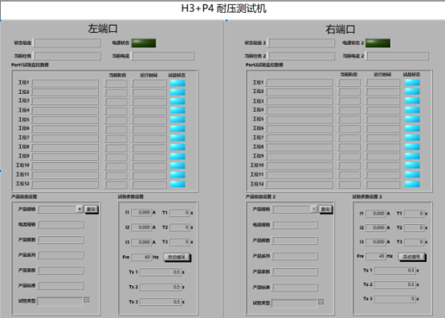
下面软件是30KVA的断路器温升试验软件。
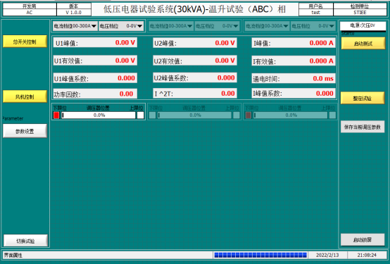
下面软件是客户自研的板卡功能检测软件。
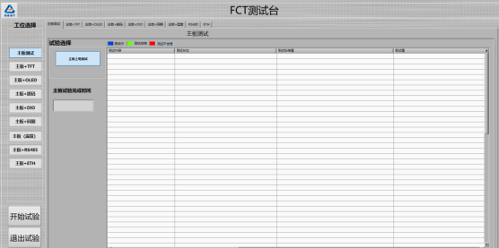
下面软件是两个大工位8小工位的试验台，根据客户自己标准进行检测。
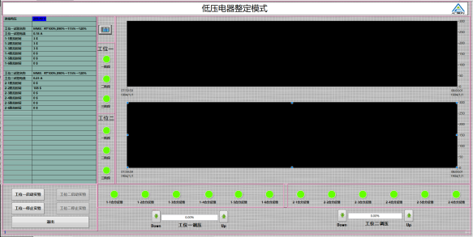
下面软件是关于电弧检测，设备自动产生电弧，软件通过电弧波形判断被侧品是否合格。
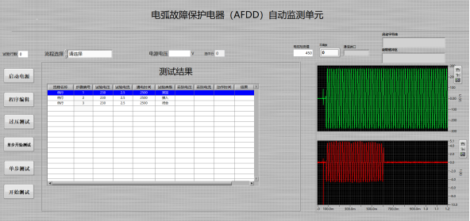
下面软件是通过通讯控制电子电源来进行电流控制从而进行试验，并判断产品合格与否。
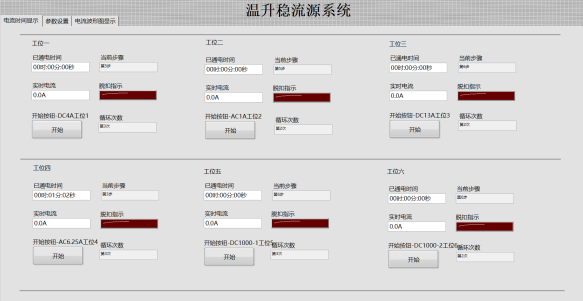
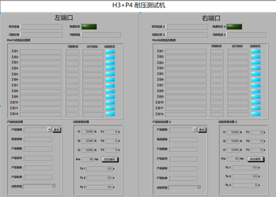
下面软件是30KVA的断路器温升试验软件。
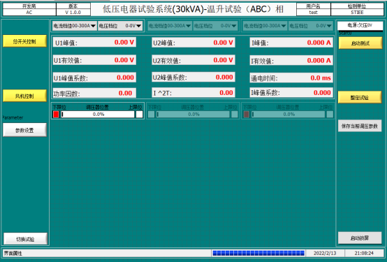
下面软件是客户自研的板卡功能检测软件。
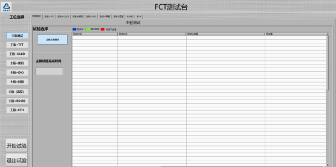
下面软件是两个大工位8小工位的试验台，根据客户自己标准进行检测。
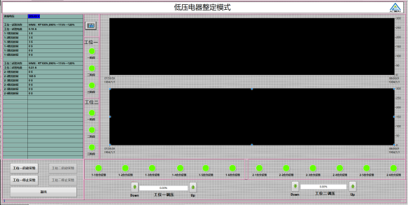
下面软件是关于电弧检测，设备自动产生电弧，软件通过电弧波形判断被侧品是否合格。
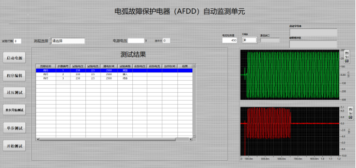
下面软件是通过通讯控制电子电源来进行电流控制从而进行试验，并判断产品合格与否。
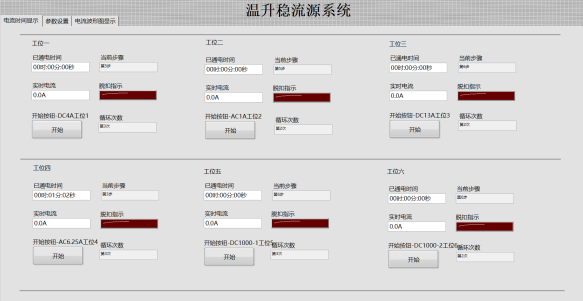